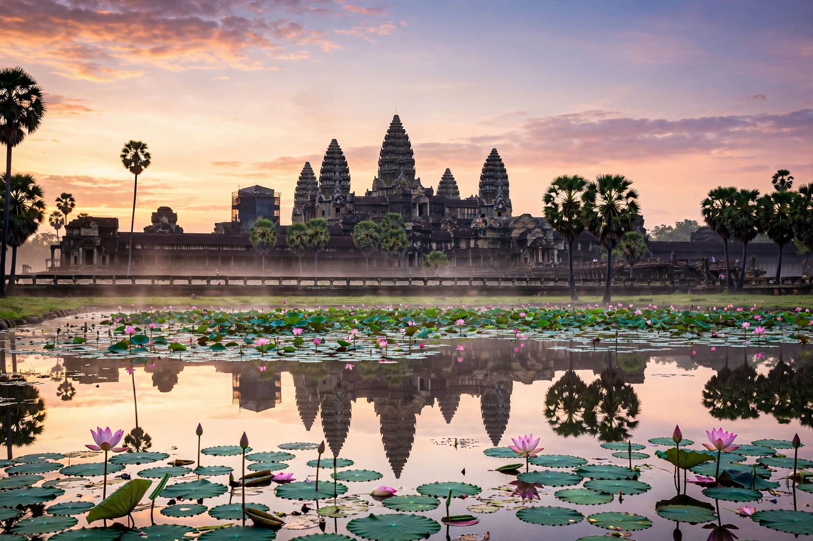

Angkor
From Wikipedia, the free encyclopedia

Angkor was the capital city of the Khmer Empire from the ninth to the fifteenth centuries AD, in present-day Cambodia near Siem Reap. Its vast archaeological park contains the remains of successive capitals and hundreds of temples, including Angkor Wat — the largest religious monument in the world — and the walled city of Angkor Thom with the Bayon. At its height the city sprawled over some 1,000 km², arguably the largest pre-industrial urban complex on Earth.
History
Yasodharapura was founded by Yasovarman I around 900; kings moved and rebuilt capitals within the Angkor plain, each adding a state temple-mountain and vast reservoirs (baray) for irrigation. Suryavarman II built Angkor Wat in the early twelfth century as a temple to Vishnu and his own funerary monument. Jayavarman VII (1181–1218), a Mahayana Buddhist, built Angkor Thom, the Bayon and hospitals and roads across the empire after repelling a Champa invasion.
Decline and rediscovery
Angkor faded in the fifteenth century amid Ayutthayan invasions, religious change to Theravada Buddhism and — lidar-era research suggests — climate stress on its water network; the court moved south, though Angkor Wat was never wholly abandoned. French naturalist Henri Mouhot's 1860 accounts popularised the ruins in the West, and French colonial scholars of the École française d'Extrême-Orient mapped and restored the sites.
The site today
A UNESCO World Heritage Site since 1992, Angkor Archaeological Park faces pressures from mass tourism, groundwater extraction and regional development; Lidar surveys (2012–2015) revealed a vast gridded urban landscape beneath the forest, transforming understanding of Khmer urbanism. Angkor Wat appears on Cambodia's flag — the only national flag depicting a building.